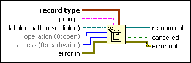

Open/Create/Replace Datalog Function
Owning Palette: Datalog Functions
Requires: Base Development System
Opens an existing datalog file, creates a new datalog file, or replaces an existing datalog file, programmatically or interactively using a file dialog box. This function does not work for files inside an LLB.
You can optionally specify a dialog prompt or default filename. Use this function with the intermediate Write Datalog or Read Datalog functions. Use the Close File function to close the reference to the file.

 Add to the block diagram Add to the block diagram |
 Find on the palette Find on the palette |